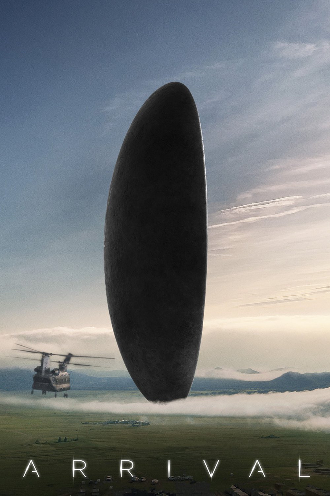
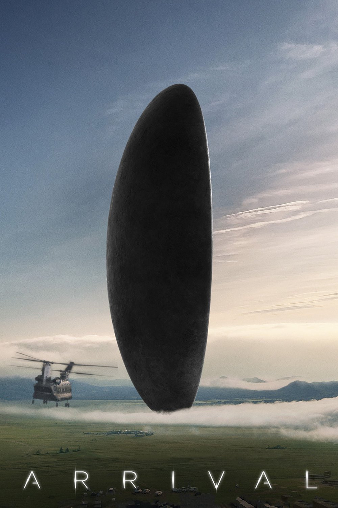
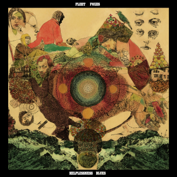
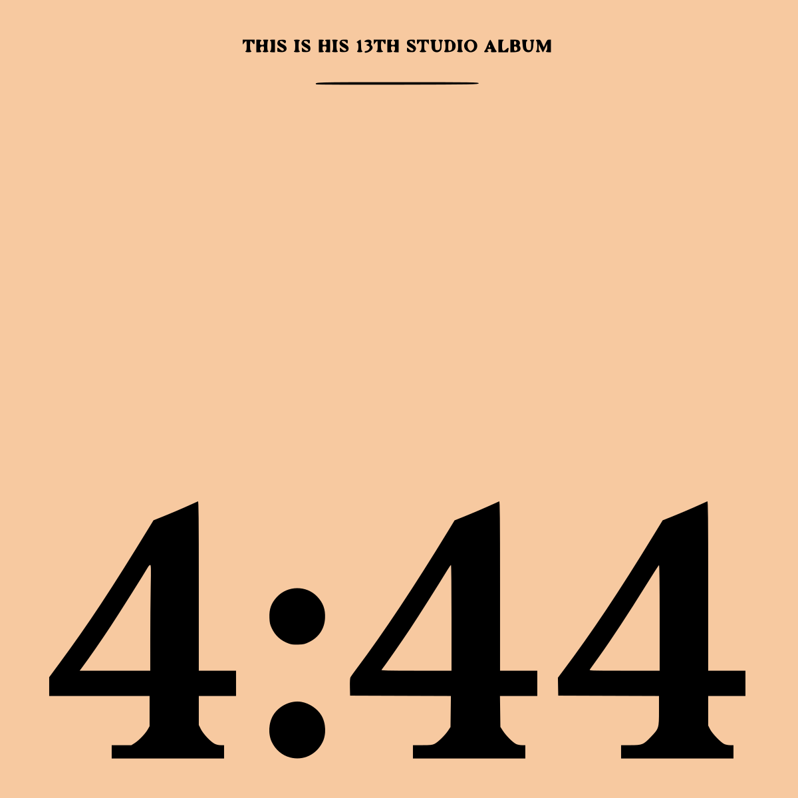
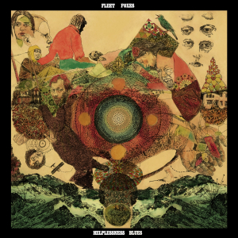
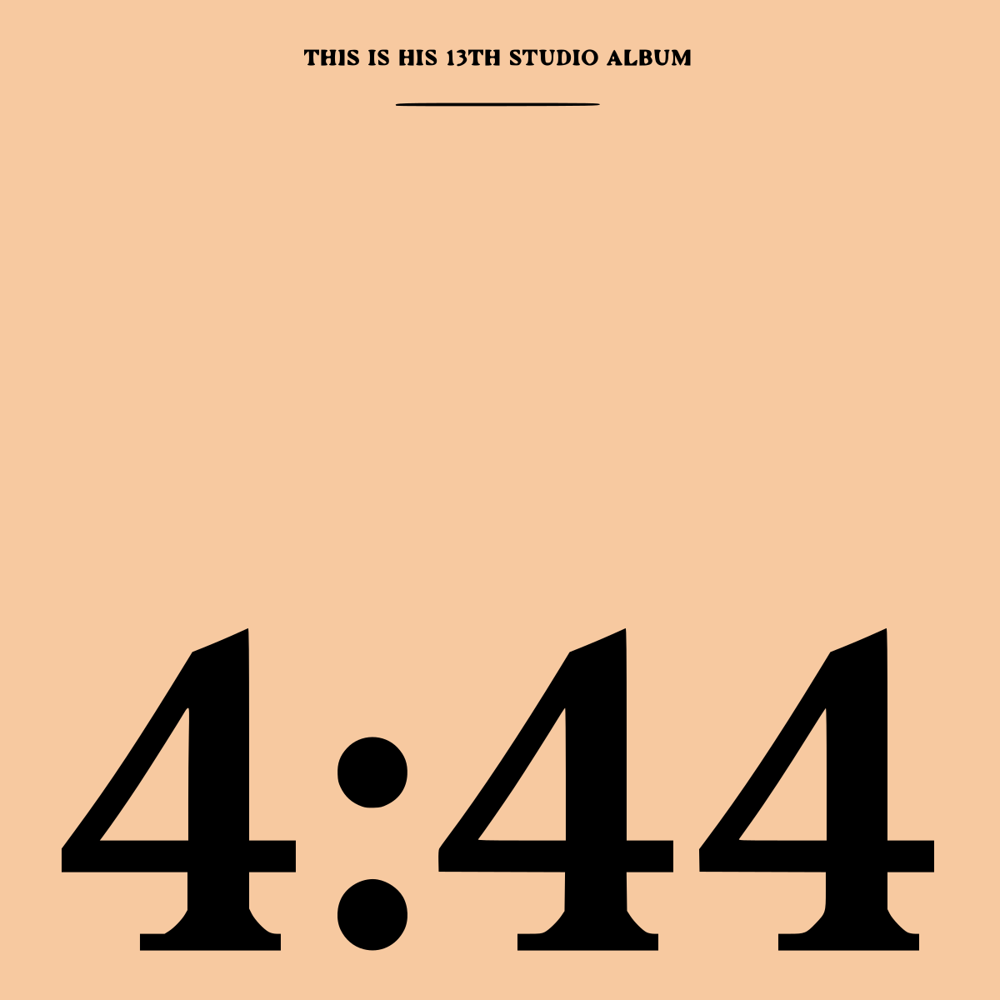
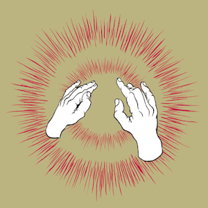
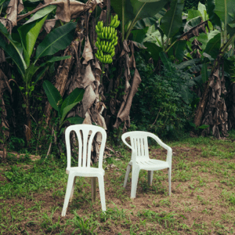
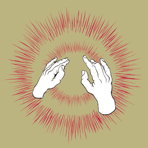
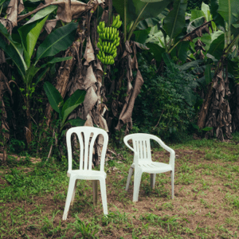

Building human‑centered AI products with cinematic craft.
Summary
AI-focused Technology Leader with a track record of spearheading patented, enterprise‑grade software from
inception to deployment. Drives rapid product development in fast‑paced, asynchronous environments for S&P 500
clients. Known for leading global technical teams across startup and corporate settings with deep expertise in
AI product engineering, full‑stack development, and strategic R&D.
I also happen to love cooking, film, and music. (Of course I also love my wife, but don't tell her I said that.)
Promoted from Customer Support Expert to L3 within 8 months via high‑impact contributions to core AI products.
Spearheaded frontend for GFI AppManagerAI (React, TypeScript, MUI) and co‑engineered backend (Python, FastAPI, AWS Bedrock) delivering a multi‑tool agent with advanced data visualization.
Engineered end‑to‑end features for MyPersonas (NodeJS, React, Redis‑OM): web‑crawling data ingestion and client license management.
Led technical onboarding for S&P 500 clients; contributed Next.js SSR to Eloquens AI email engine and shipped Java features to Jive.
Thrived in a fully remote, asynchronous team through disciplined communication and ownership.
Co‑Founder & Development Lead
Altooro — Nazareth, Northern Israel · 12/2019 – 07/2024
Led end‑to‑end development of a patented ML‑based assessment platform (NodeJS, TypeScript, AWS) for clients including Fiverr.
Built and guided a 7‑person team across sprints, code quality, and ops — surpassing 15,000 GitHub contributions.
Secured $2.5M in VC and government grants; authored technical sections for Israeli Innovation Authority applications.
Drove R&D and growth via user interviews, product strategy, and media features in Calcalistech & Geektime.
Community Member (Volunteer) — Formerly: Senior Team Lead / Senior Program Manager
Program Loop — Nazareth, Northern Israel · 04/2017 – Present
Developed and scaled a K‑12 CS curriculum (coding, AI, cybersecurity) reaching 15,000+ students across Israel, the USA, and the UK.
Led USA launch: partnerships with 30 schools in MA and NY; ran international workshops for 2,000+ students.
Transitioned to volunteer Community Member (10/2024‑Present) advising curriculum R&D and mentorship.
Co‑Founder & Android Application Developer
Oseela — Nazareth, Northern Israel · 05/2012 – 01/2018
Co‑founded and shipped a travel‑focused Android app (Java) as part of a U.S. Dept. of State program, implementing real‑time safety tools and reaching 1,000+ users.
Projects
Altooro — ML Assessment Platform
Co‑Founder & Development Lead · 2019–2024
Patented, ML‑based assessment platform for evaluating programming tasks at scale.
Served enterprise customers including Fiverr; secured $2.5M in grants and VC funding.
Shipped end‑to‑end features across NodeJS, TypeScript, AWS; led a 7‑person team and 15k+ GitHub contributions.
Oseela — Android Travel Safety
Co‑Founder & Android Developer · 2012–2018
Travel‑focused app with real‑time safety tools, built in Java.
Launched as part of a U.S. Department of State program; reached 1,000+ users.
Automixer — Music Mixing Tool
Personal project · In progress
Experimental tool for smooth crossfades and playlist‑friendly transitions.
Focus: simplicity, minimal UI, and reliable automation for casual mixing.
Achievements
Patent: Automated Quality Assessment of a Programming Task (US20230376311A1)
Winner: WeWork Labs “5 Day Charge”
Core Competencies & Skills
Full‑Stack Development
AI Product Engineering
LLM Agent & Tool Development
Enterprise SaaS Solutions
Client Onboarding & Enablement
Asynchronous Team Collaboration
Software Architecture Design
Technical Team Leadership
Strategic Planning & Execution
Project Lifecycle Management
JavaScript
TypeScript
NodeJS
Python
Java
C#
HTML
CSS
React
Next.js
Material‑UI
shadcn/radix‑ui
Express
FastAPI
jQuery
FreeMarker
Prisma
Redis‑OM
AWS Bedrock
LangFuse
LLM Tooling & Context Engineering
RabbitMQ
OpenSearch
AWS
Git
Maven
Docker
Playwright
PyTest
RAG
AI Agents
Education & Training
High School Diploma — Excellent High School
Graduated top of class in Computer Science, Biology & English.
Training & Certifications
Introduction to Large Language Models — Coursera (2024)
Crash Course on Python — Coursera (2020)
Passions
Cooking
Original recipes from lots of experimentation. Favorites below:
Chocolate Chip Cookies — crisp edges, soft center.
Pasta Al Forno (specifically ) — cozy, golden top.
Lasagna
Baked Gnocchi
Homemade Pizza
Eggplant Parmesan
Roasted Chicken
Chicken Tikka Masala
Chicken Fajitas
Film & TV
Cinephile since age 12; thousands watched. Current favorite directors:
 

 



 


